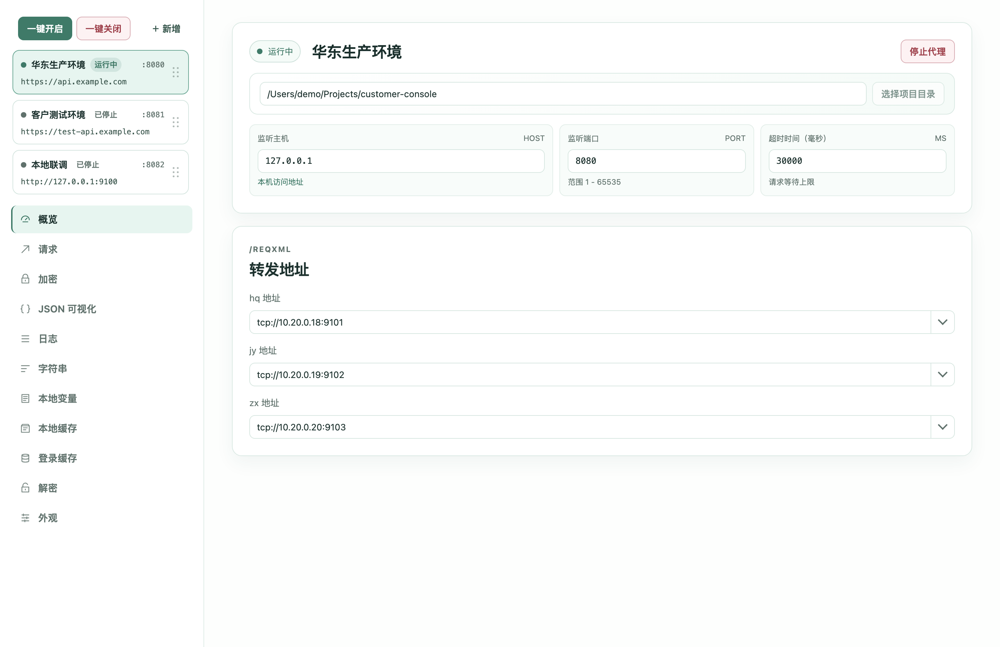

多环境实例
生产、测试、本地联调独立配置，一键启动或关闭，不再反复修改参数。
为开发与测试打造的本地 HTTP / HTTPS / TCP 转发工具。多环境实例、请求调试、JSON 可视化与本地缓存，全部集中在一个窗口完成。

不是把多个工具拼在一起，而是围绕本地转发链路重新组织工作流。
生产、测试、本地联调独立配置，一键启动或关闭，不再反复修改参数。
覆盖常见转发协议，并兼容 reqxml 与 TZT 原生协议场景。
参数、响应、耗时同屏呈现，定位问题不必在多个窗口之间来回跳转。
树形结构、字段路径与类型一目了然，复杂响应也能快速读完。
本地变量、登录缓存与常用配置随实例管理，切换环境更轻。
把请求链路中的加密、解密与响应内容放在同一处排查。
把高频操作压缩到最短路径，让注意力回到接口本身。
为不同项目建立独立代理实例，配置自动保存，随时切换。
监听本机端口，把请求准确转发到目标地址，状态实时可见。
请求、响应、日志和结构化数据在同一个工作区完成检查。
从接口联调到多环境切换，常用链路都在一个窗口里保持上下文。
请求和响应并排查看，复杂 JSON 直接展开，复制与比较都更顺手。
生产、测试、本地联调各自独立，切换实例不会打乱已有配置。
仅提供最新版本。安装后，客户端会通过 finbr.asia 直连检查后续更新。